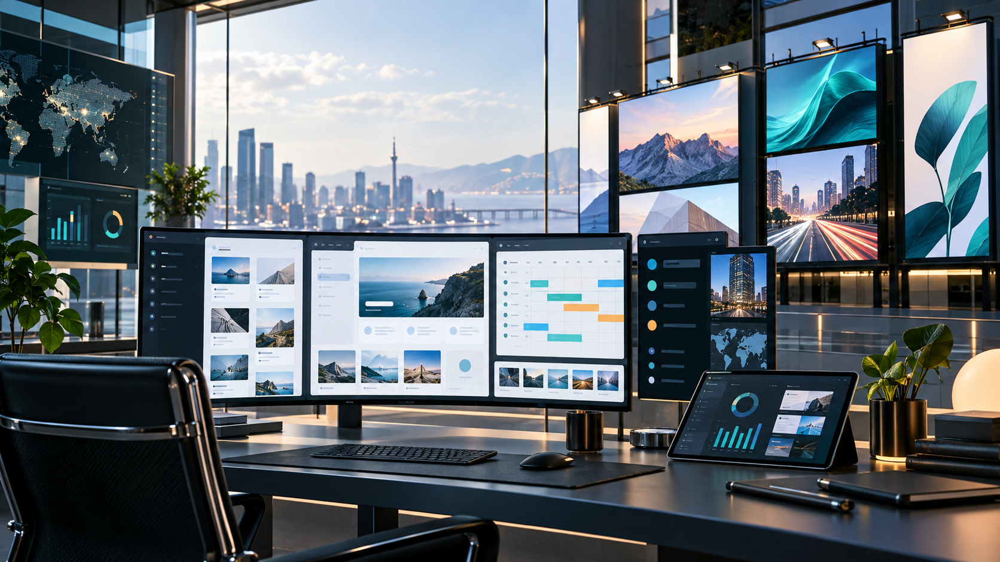

CMS and publishing
Organizing content models, pages, admin flows, and update routines for teams that publish regularly.
Websites, CMS, property, digital billboards
I’m Xin Mei. I work across public websites, CMS platforms, digital billboard products, and internal apps that help teams manage campaigns, content, and daily operations with less friction.

About
My portfolio brings together work on customer-facing websites, CMS-driven publishing, regional brand platforms, and tools used behind the scenes by operations teams.
I care about clear information structure, reliable admin workflows, mobile-friendly pages, and products that are easy for teams to update after launch.
Organizing content models, pages, admin flows, and update routines for teams that publish regularly.
Building and maintaining professional sites for brand, product, campaign, and service communication.
Supporting internal tools that turn field tasks, scheduling, and execution updates into manageable workflows.
Selected work
Internal portfolio
Use anonymised screens, wireframes, or recreated flows to explain what the CMS helps users publish, approve, schedule, or track.
Frame each internal project around the user problem, your role, the modules designed, and the operational result.
For private CMS work, use case studies such as dashboard design, content management, campaign setup, permission flow, and reporting.
Experience
Bridging website goals, content needs, stakeholders, and launch-ready execution.
Structuring pages, updates, and admin workflows so websites stay maintainable after launch.
Supporting systems connected to campaign scheduling, billboard content, and runner workflows.
Contact
For portfolio details, collaborations, or work opportunities, you can reach out to Xin Mei.